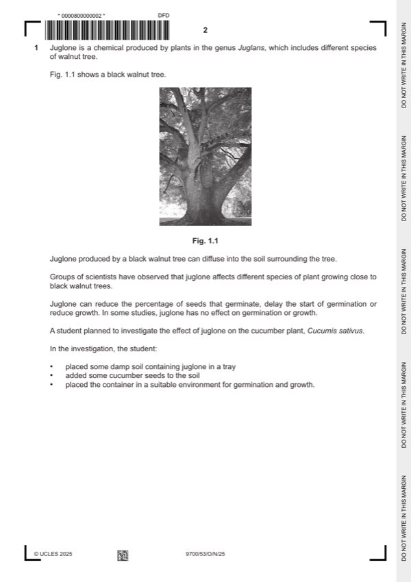

Question 1

Original paper page 2
Part 1(a) — solution
any one from: 1
(presence of) juglone (with a concentration of 1.0 10-3 moldm-3)
and
control (treatment) / absence of juglone ;
concentration, of juglone ;
Mark points
- Include the ideas shown in the solution above.
Part 1(b)(i) — solution
5 cm3 of (original / 0.1 mol dm-3) juglone (solution) ; 2
495 cm3 of the (mixture of) solvents ;
Mark points
- Include the ideas shown in the solution above.
Part 1(b)(ii) — solution
any one from: 1
use, syringe / graduated pipette / micropipette / burette ;
use, volumetric flask ;
use larger (stated) volumes (of both juglone and mixture of solvents) ;
Mark points
- Include the ideas shown in the solution above.
Part 1(c)(i) — solution
1 (mixture of) solvents / solution, with no juglone ; 2
Mark points
- Include the ideas shown in the solution above.
Part 1(c)(ii) — solution
any seven from: 7
Mark points
- Include the ideas shown in the solution above.
Part 1 — solution
method for standardising the exposure of the seeds to juglone ;
Mark points
- Include the ideas shown in the solution above.
Part 1(d)(i) — solution
any two from: 2
Mark points
- Include the ideas shown in the solution above.
Part 1(d)(ii) — solution
any three from: 3
Mark points
- Include the ideas shown in the solution above.
Part 1 — solution
- (the critical value at 18 d.f. and p = 0.05 is) 2.101 ;
Mark points
- (the critical value at 18 d.f. and p = 0.05 is) 2.101 ;
Part 1 — solution
(initial) volume / population / number, of bacteria (in bacterial suspensions)
or
volume of (bacterial) suspension
or
(original) optical density of (bacterial) suspensions ;
Mark points
- Include the ideas shown in the solution above.
Part 1 — solution
idea that investigation, not carried out in a person / carried out in a laboratory ;
Mark points
- Include the ideas shown in the solution above.